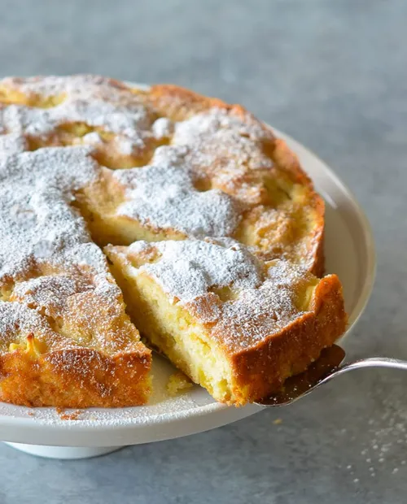

Apple Cake

Description
Apple cakes are simple to make with readliy available ingredients, like apples and applesauce.
The cake is very tasty and preserves well.
This is recipe is very reminiscent of the autumn and will delight your home and it's inhabitants with autumnal scents.
Ingredients
- Apples
- Applesauce
- Butter
- Eggs
- Sugar
- Flour
- Cinnamon
- Salt
- Vanilla
Steps
- Gather ingredients. Preheat the oven to 350 degrees F (175 degrees C). Lightly grease and flour a 9x13-inch baking pan.
- Beat butter, applesauce, and eggs together in a large bowl with an electric mixer until foamy.
- Add flour, brown sugar, cinnamon, vanilla, baking powder, baking soda, and salt; mix until well combined. Stir in apples.
- Pour batter into the prepared pan.
- Bake in the preheated oven until a toothpick inserted into the center of cake comes out clean, 25 to 30 minutes. Cool in the pan for 10 minutes.